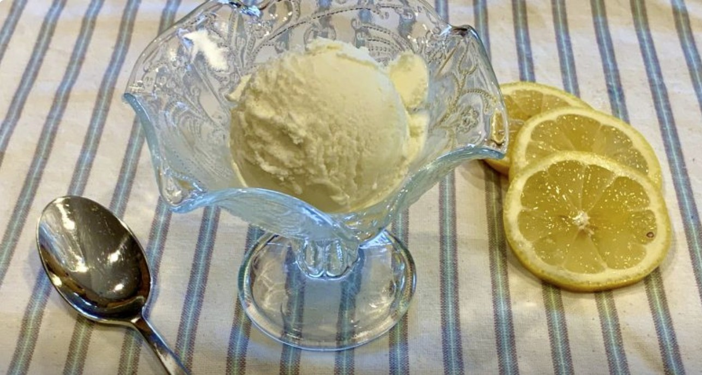

Home
Sour Cream Lemon Sherbert
*** Recipe and image by Serious Keto ***

Ingredients
- 2.5 cups sour cream
- 1⁄3 cup Swerve granular
- 1⁄3 cup allulose
- 1⁄2 cup water
- 2 TB All-U-Lose honey flavored syrup
- 1⁄2 tsp sea salt
- 1 lemon zest (zest of one lemon)
- 1 lemon juice (juice from one lemon)
Steps
- Place sour cream in a medium mixing bowl (ideally with a pour spout). Place this bowl into a larger bowl with an ice bath and set aside.
- In a small saucepan over medium heat, dissolve the Swerve, allulose, All-U-Lose syrup and salt into the water.
- Whisk this liquid into your sour cream, then whisk in the lemon juice and zest. Allow this mixture to cool, whisking occasionally until it’s temperature is in the mid 40’s F. (30-60 minutes)
- Optional – You can refrigerate the mixture over night to give the sherbet a more intense lemon flavor.
- Pour the mixture into a running ice cream maker and allow to churn until it is the consistency of soft serve ice cream. (30-60 minutes)
- Transfer to a storage container and freeze for 2-3 hours before serving.